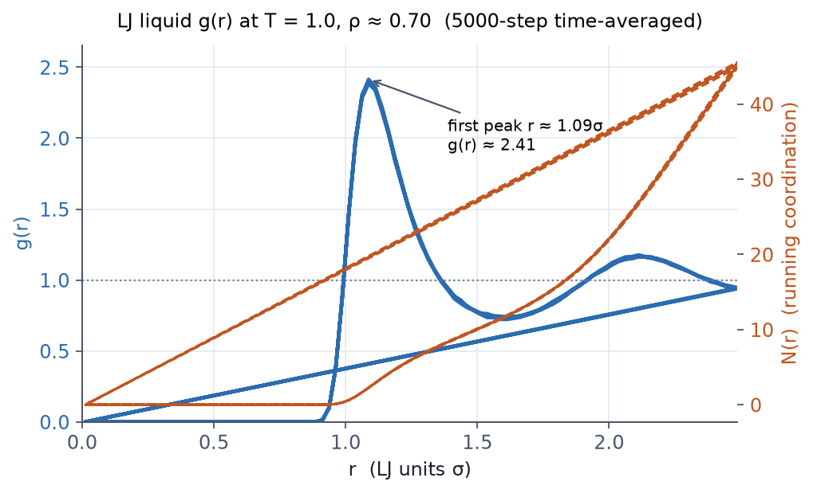
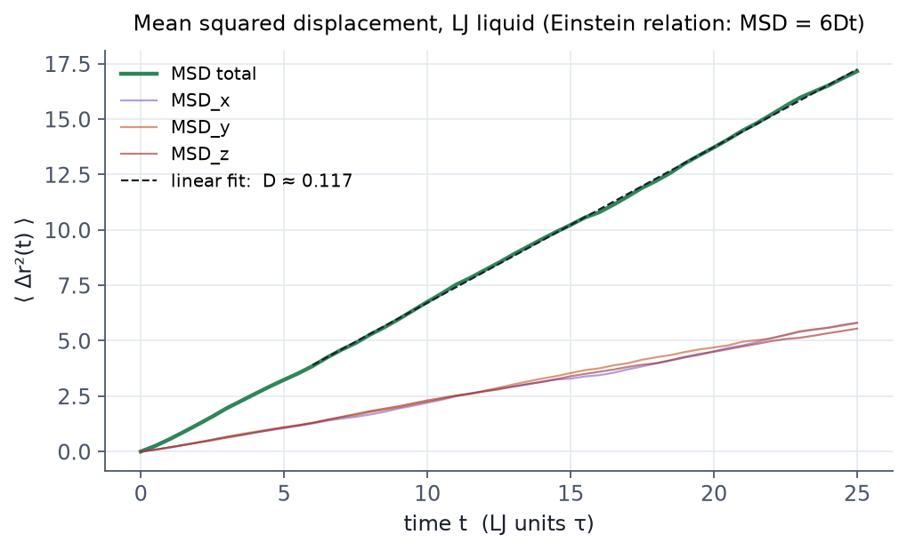

무엇을 하는 예제인가
E1 의 LJ 계를 실제 연구에 쓰는 형태로 확장합니다.
에너지 최소화로 시작해 NVT로 데우고 NPT로 압력까지 평형화한 뒤, 생성(production)
단계에서 동경 분포 함수 g(r) 와 평균 제곱 변위(MSD)를 측정합니다. 한 입력
파일 안에 minimize → fix nvt → fix npt → compute/fix ave 의 표준 흐름이 모두
들어 있어, 대부분의 입문 예제가 그대로 따르는 골격을 보여 줍니다.
관련 개념은 06 셋업과 실행 과 07 출력과 분석 에서 다룹니다.
전체 입력 스크립트 — in.demo
# LJ liquid: minimize -> NVT (T=1.0) -> NPT (T=1.0, P=0.5) -> production + rdf + msd
units lj
atom_style atomic
lattice fcc 0.8442
region box block 0 8 0 8 0 8
create_box 1 box
create_atoms 1 box
mass 1 1.0
pair_style lj/cut 2.5
pair_coeff 1 1 1.0 1.0 2.5
velocity all create 1.0 12345 mom yes rot yes dist gaussian
neighbor 0.3 bin
neigh_modify every 20 delay 0 check no
thermo_style custom step temp press pe ke etotal density
thermo 200
# 1단계: 에너지 최소화
min_style cg
minimize 1.0e-4 1.0e-6 1000 10000
# 2단계: NVT 가열/평형
fix 1 all nvt temp 1.0 1.0 0.5
run 2000
unfix 1
# 3단계: NPT 압력 평형 (T = 1.0, P = 0.5)
fix 2 all npt temp 1.0 1.0 0.5 iso 0.5 0.5 5.0
run 3000
# 4단계: 생성 + 측정 (RDF, MSD)
reset_timestep 0
compute rdf1 all rdf 100
fix rdfavg all ave/time 10 100 1000 c_rdf1[*] file rdf.dat mode vector
compute msd1 all msd
fix msdavg all ave/time 1 1 100 c_msd1[1] c_msd1[2] c_msd1[3] c_msd1[4] file msd.dat
thermo 100
run 5000
8 × 8 × 8 격자로 원자 2048개입니다. compute rdf 와 compute msd 의 결과를
fix ave/time 으로 시간 평균해 각각 rdf.dat, msd.dat 로 저장합니다.
실행
lmp -in in.demo > out.demo
LAMMPS 22 Jul 2025 직렬 빌드에서 전체가 약 7초 만에 끝납니다. 끝나면 out.demo
와 함께 rdf.dat, msd.dat 가 생깁니다.
결과 ① — 생성 단계 안정성
생성 단계의 thermo를 보면 온도는 setpoint 1.0 부근에서 ±0.04, 압력은 setpoint 0.5 부근에서 ±0.2 정도로 진동하며 평형을 유지하고, 밀도는 0.69–0.70 부근으로 NPT 평형에 도달합니다.

결과 ② — 동경 분포 함수 g(r)
rdf.dat 를 그리면 액체 특유의 진동 구조가 나옵니다. 첫 피크가 r ≈ 1.09 σ 에서
g(r) ≈ 2.41, 두 번째 봉우리가 ~ 2.1 σ 부근에 보입니다.

결과 ③ — MSD 와 자기확산계수
MSD가 시간에 선형으로 증가하는 정상 확산이 관찰되고, Einstein 관계 ⟨Δr²(t)⟩ = 6 D t 에서 직선 fit 의 기울기로 자기확산계수를 얻습니다. 5000-step 데이터의 fit 결과는 D ≈ 0.117 (LJ 단위)입니다.

요점
minimize → nvt → npt순서는 작은 LJ부터 큰 분자계까지 그대로 통하는 표준 셋업입니다.compute는 값을 "정의"만 하고,fix ave/time으로 "꺼내" 파일에 저장합니다.g(r)는 구조를, MSD 기울기는 동역학(확산)을 정량화합니다.- 같은 입력을 다시 돌리면
rdf.dat·msd.dat는 시드가 고정돼 동일하게 재현됩니다.
관련 개념 챕터
- 06 셋업과 실행 —
fix nvt/npt,minimize,run - 07 출력과 분석 —
compute,fix ave/*, 후처리 - 05 상호작용 모델 —
pair_style lj/cut
바로 앞 예제는 E1 — LJ 액체 첫 실행, 다음은 E3 — Cu(100) 슬랩 입니다.